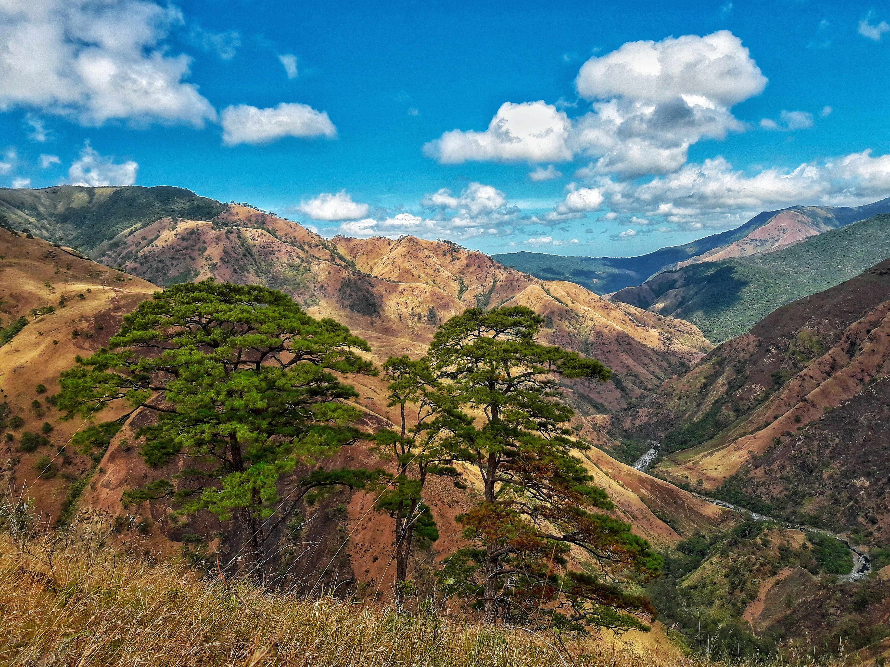

Mountain Trails
For outdoor enthusiasts and adventure seekers, Tarlac offers a range of mountain trails from the iconic Pinatubo trek to quieter forest paths in the Zambales mountain range. Fresh air, dramatic scenery, and unforgettable views await.
-
Mt. Pinatubo Trail
-

Zambales Mountain Foothills -
 Sta. Juliana Trekking Routes
Sta. Juliana Trekking Routes
- Mt. Pinatubo Trail: The most famous trek in Tarlac, taking hikers through lahar fields and river crossings before arriving at the breathtaking turquoise crater lake.
- Zambales Mountain Foothills: The western edge of Tarlac borders the Zambales mountain range, offering forest trails with cooler temperatures and rich biodiversity.
- Sta. Juliana Trekking Routes: The barangay of Sta. Juliana in Capas serves as the jump-off point for several trails, with options for different fitness levels.